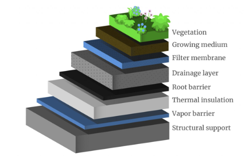
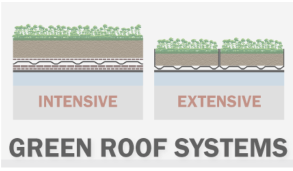

Research
Idea:
Turning building rooftops into green spaces or gardens reduces urban
heat and creates habitats for birds and insects. Bonus points if they’re
community gardens where locals can grow veggies or flowers.
Problem currently
Green roofs lower urban temperatures, cut energy use, and save on electricity costs. Three plants—Sedum acre,
Frankenia thymifolia, and Vinca major—excel at reducing energy needs and CO₂, making them highly effective for green roofs.
STG 13
Possible Solutions
Green Roofs:

The drainage layer in a green roof allows excess water to flow away from
the growing medium, preventing waterlogging and protecting the layers below.
Made of materials like gravel or drainage mats, it keeps plant roots healthy
by avoiding oversaturation, supports structural stability, and contributes to
a balanced water cycle.
Two green roofs:

Extensive Green Roofs
- Soil Depth: Typically have a shallow soil depth of 2–15 cm.
- Vegetation: Usually support low-maintenance, drought-resistant plants like sedums, mosses, and grasses.
- Maintenance: Require minimal maintenance, making them cost-effective and easy to install.
- Weight: Lighter, generally weighing 60–150 kg/m² when saturated.
- Usage: Primarily designed for environmental benefits like insulation, stormwater management, and biodiversity.
- Cost: Generally less expensive to install and maintain.
Intensive Green Roofs
- Soil Depth: Have a deeper soil layer of 15 cm or more, allowing for a wider variety of plants.
- Vegetation: Can support a diverse range of plants, including shrubs, small trees, and flowers, as well as edible plants.
- Maintenance: Require more maintenance, including irrigation, fertilization, and regular care.
- Weight: Heavier, typically weighing 150–400 kg/m² when saturated.
- Usage: Often designed for recreational use, such as gardens, parks, or community spaces, in addition to environmental benefits.
- Cost: More expensive to install and maintain due to the complexity and additional infrastructure needed.
Benefits of Green Roof
According to Wallbarn Birds, butterflies, and other insects are attracted to green roofs,
providing a rich biodiversity that can help to bring nature back into our urban spaces.
The vegetation on green roofs helps to provide food and shelter for wildlife, as well as
providing a habitat for plants and animals.
- - Rooftop gardens can support up to 30% more plant species compared to traditional urban green spaces.
- - Incorporating native plants can attract local wildlife, with studies showing that green roofs with native vegetation can host 50% more insect species.
- - Rooftop gardens can increase the abundance of bee species in urban areas by up to 40%, providing essential habitats and food sources.
- - Green roofs can support over 15 different butterfly species, contributing to urban pollinator networks.
- - Approximately 70% of bird species in urban areas utilize green roofs for nesting and foraging, particularly in cities with limited green space.
- - Studies indicate that green roofs can support up to 20 bird species, enhancing urban wildlife diversity.